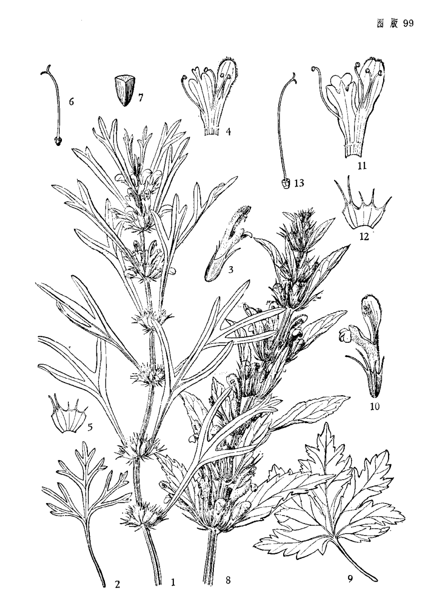

出现篇目
古代记载 《毛诗故训传》
蓷，鵻也。（《毛传》注《中谷有蓷》）
《毛诗草木鸟兽虫鱼疏》
蓷，似萑，方茎，白华，华生节间。旧说及魏博士济阴周元明皆云庵闾是也。韩诗及《三苍》说悉云蓷，益母也，故曾子见益母感恩。案《本草》云“茺蔚，一名益母”，故刘歆云“蓷，臭秽，即茺蔚也”。
《毛诗正义》
《释草》云：“萑，蓷。”李巡曰：“臭秽草也。”郭璞曰：“今茺蔚也。叶似萑，方茎白华，华注节间，又名益母。”陆机《疏》云：“旧说及魏博士济阴周元明皆云‘庵葖’是也。《韩诗》及《三苍》说悉云‘益母’，故曾子见益母而感。”案《本草》云：“益母，茺蔚也。”一名益母，故刘歆曰“蓷，臭秽”。臭秽即茺蔚也。（《毛诗正义》疏《中谷有蓷》）
《诗集传》
蓷、鵻也。 叶似萑、方茎白华。 华生节闲。 卽今益母草也。（《诗集传》集注《中谷有蓷》)
《本草纲目》
《别录》曰∶茺蔚生海滨池泽，五月采。 弘景曰∶今处处有之。叶如荏，方茎，子形细长，有三棱。方用亦稀。 颂曰∶今园圃及田野极多。郭璞注《尔雅》云∶叶似荏，方茎白华，华生节间。节节生花，实似鸡冠子，黑色，茎作四方棱，五月采。又云九月采实，医方稀有用实者。 宗奭曰∶茺蔚初春生时，亦可浸洗，淘去苦水，煮作菜食。凌冬不凋悴也。 时珍曰∶茺蔚近水湿处甚繁。春初生苗如嫩蒿，入夏长三、四尺，茎方如黄麻茎。其叶如艾叶而背青，一梗三叶，叶有尖歧。寸许一节，节节生穗，丛簇抱茎。四、五月间，穗内开小花，红紫色，亦有微白色者。每萼内有细子四粒，粒大如同蒿子，有三棱，褐色，药肆往往以作巨胜子货之。其草生时有臭气，夏至后即枯，其根白色。苏颂《图经》谓其叶似荏，其子黑色，似鸡冠子，九月采实，寇宗奭《衍义》谓其凌冬不凋者，皆误传也。此草有白花、紫花二种，茎、叶、子、穗皆一样。但白者能入气分，红者能入血分，别而用之可也。 按《闺阁事宜》云∶白花者为益母；紫花者为野天麻。《返魂丹注》云∶紫花者为益母，花者不是。陈藏器《本草》云∶茺蔚生田野间，人呼为郁臭草。天麻生平泽，似马鞭草，节节生紫花，花中有子，如青葙子。孙思邈《千金方》云∶天麻草，茎如火麻，冬生苗，夏着 赤花，如鼠尾花。此皆似以茺蔚、天麻为二物，盖不知其是一物二种。凡物花皆有赤白，如牡丹、芍药、菊花之类是矣。又按∶郭璞《尔雅注》云∶蓷，音推，即茺蔚，又名益母。叶似荏，白华，华生节间。又云∶藬 ，音推，方茎，叶长而锐，有穗，穗间有花紫缥色，可以为饮，江东呼为牛 。据此则是蓷、藬 名本相同，但以花色分别之，其为一物无疑 矣。宋人重修本草，以天麻草误注天麻，尤为谬失。陈藏器《本草》又有錾菜，云生江南阴地，似益母，方茎对节白花，主产后血病。此即茺蔚之白花者，故其功主血病亦相同。
当代记载 《中国植物志》
益母草（Leonurus japonicus Houtt.），唇形科益母草属植物。一年生或二年生草本，有于其上密生须根的主根。茎直立，通常高30-120厘米，钝四棱形，微具槽，有倒向糙伏毛，在节及棱上尤为密集，在基部有时近于无毛，多分枝，或仅于茎中部以上有能育的小枝条。叶轮廓变化很大，茎下部叶轮廓为卵形，基部宽楔形，掌状3裂，裂片呈长圆状菱形至卵圆形。花期通常在6-9月，果期9-10月。产全国各地；为一杂草，生长于多种生境，尤以阳处为多，海拔可高达3400米。苏联，朝鲜，日本，热带亚洲，非洲，以及美洲各地有分布。

<中国植物志>